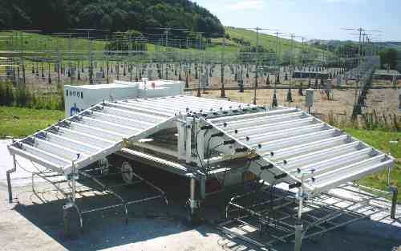

In order to derive the full three-dimensional wind vector,
wind-profilers commonly use the Doppler Beam Swinging technique;
observations must be made in a minimum of 3 non-coplanar beam pointing
directions which typically include the vertical and at an off-vertical
angle (of between 5° and 20°) in two orthogonal azimuths. One
of the simplest ways to steer the beam for UHF profilers, which have
horizontal antenna dimensions of the order of a few metres, is to use
a separate antenna for each beam direction. This is the case for the
1290 MHz UFAM boundary-layer wind-profiler seen in the foreground of
the picture below. Each of the 3 antennas has dimensions of 2 ×
2 m; the off-vertical angle is 17°.

Since it is impractical to have more than one antenna, with
horizontal dimensions of the order of 100 m, for a lower-VHF radar,
beam steering is achieved through the use of a single phased-array
antenna. The nominally vertically directed beam can be steered
off-vertical, and towards a particular azimuth, by appropriately
delaying the phase of signals fed to and from different parts of the
array. The antenna array for the 46.5 MHz NERC MST Radar can be seen
in the background of the picture above. It is composed of a 10 ×
10 array of 'quads', 2 × 2 sub-groupings of 4-element Yagi
aerials as shown below. The phase of signals can
be controlled for each quad to give a total of 17 possible beam
pointing directions (some MST radars allow observations to be made in
a much wider variety of directions). Equal power weighting is given to
the central section of 4 quads (green), the two middle sections of 16
quads each (red and blue), and the two outer sections of 32 quads each
(yellow and magenta) in order to reduce the beam side-lobe levels; in
the transmit mode, each of the five sections is connected to a
separate 32 kW peak power transmitter. Phased-array antennas are also
used for many UHF wind-profilers, such as those used by the Met
Office.